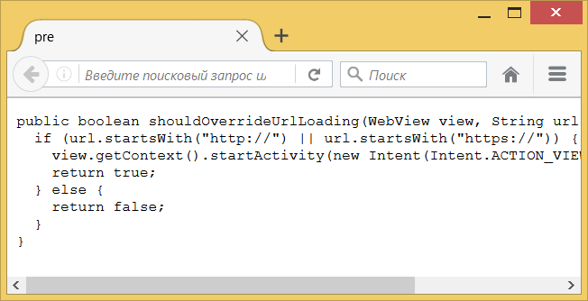
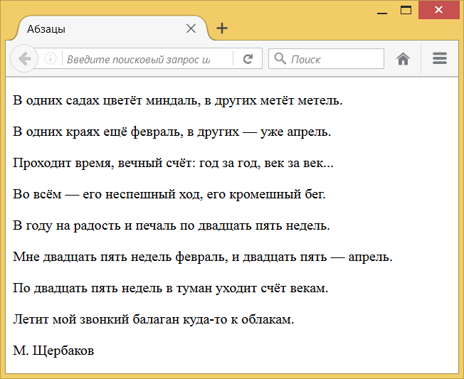
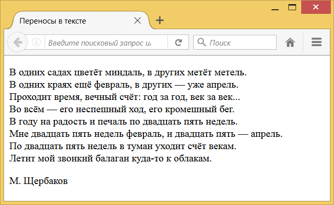
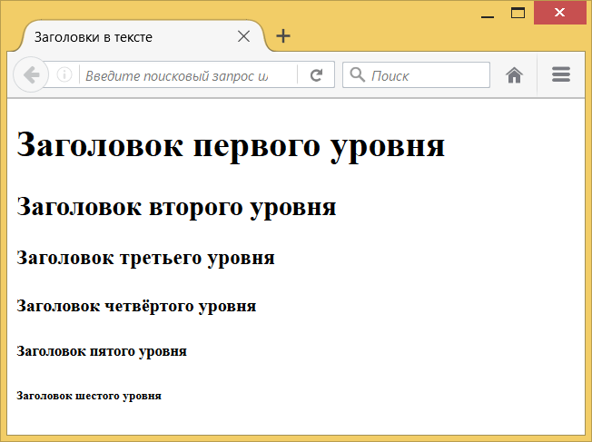
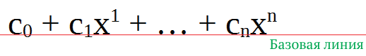
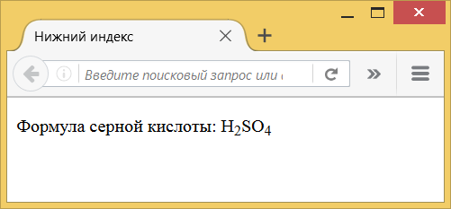

Для управления текстом и изменения его вида существует достаточно большое количество различных элементов. Что не удивительно, ведь текст — это самый популярный вид информации.
Особенности текста в HTML
Прежде чем редактировать код веб-страницы, следует принять во внимание некоторые особенности, которые присущи HTML при работе с текстом.
Любое количество пробелов идущих подряд, в браузере отображается как один
Сколько бы вы не поставили пробелов между словами, это никак не повлияет на конечный вид текста. То же правило относится к символам табуляции и переносу текста. Приведённые ниже строки будут отображаться на веб-странице одинаково, несмотря на их разное написание.
<p>Измеряй микрометром. Отмечай мелом. Отрубай топором.</p>
<p>Измеряй микрометром. Отмечай мелом. Отрубай топором.</p>
<p>Измеряй микрометром.
Отмечай мелом.
Отрубай топором.</p>Исключением из этого правила является элемент <pre>, содержимое которого отображается именно так, как оно указано в коде, с учётом всех пробелов. По этой причине <pre> часто применяется для фрагментов программ, где важны пробелы (пример 1).
Пример 1. Использование <pre>
<!DOCTYPE html>
<html>
<head>
<meta charset="utf-8">
<title>pre</title>
</head>
<body>
<pre>public boolean shouldOverrideUrlLoading(WebView view, String url) {
if (url.startsWith("http://") || url.startsWith("https://")) {
view.getContext().startActivity(new Intent(Intent.ACTION_VIEW, Uri.parse(url)));
return true;
} else {
return false;
}
}</pre>
</body>
</html>Результат данного примера показан на рис. 1.

Рис. 1. Текст внутри <pre>
Текст занимает всю ширину окна браузера
Если вы просто напишете одну длинную строку в коде HTML, то в браузере она будет отформатирована так, чтобы текст поместился по ширине. Под форматированием подразумевается автоматическое добавление переносов текста там, где есть пробел или дефис. Соответственно, переносы текста будут меняться в зависимости от диагонали экрана устройства и размеров окна браузера.
Абзацы
Как правило, блоки текста разделяют между собой абзацами. По умолчанию между абзацами существует небольшой вертикальный отступ, называемый отбивкой. Синтаксис создания абзацев следующий.
<p>Первый абзац</p>
<p>Второй абзац</p>Каждый абзац начинается с открывающего тега <p> и заканчивается закрывающим тегом </p>. В примере 2 показано применение нескольких абзацев.
Пример 2. Использование абзацев
<!DOCTYPE html>
<html>
<head>
<meta charset="utf-8">
<title>Абзацы</title>
</head>
<body>
<p>В одних садах цветёт миндаль, в других метёт метель.</p>
<p>В одних краях ещё февраль, в других — уже апрель.</p>
<p>Проходит время, вечный счёт: год за год, век за век...</p>
<p>Во всём — его неспешный ход, его кромешный бег.</p>
<p>В году на радость и печаль по двадцать пять недель.</p>
<p>Мне двадцать пять недель февраль, и двадцать пять — апрель.</p>
<p>По двадцать пять недель в туман уходит счёт векам.</p>
<p>Летит мой звонкий балаган куда-то к облакам.</p>
<p>М. Щербаков</p>
</body>
</html>Результат данного примера показан на рис. 2.

Рис. 2. Абзацы текста
Как видно из приведённого рисунка, при использовании элемента <p> между абзацами возникают отступы. От них можно избавиться, если в местах переноса строк добавить элемент <br>. В отличие от абзаца, <br> не создаёт дополнительных вертикальных отступов между строк и может применяться практически в любом тексте.
Так, текст примера 1 с учётом переноса строк будет преобразован следующим образом (пример 3).
Пример 3. Использование <br>
<!DOCTYPE html>
<html>
<head>
<meta charset="utf-8">
<title>Переносы в тексте</title>
</head>
<body>
<p>В одних садах цветёт миндаль, в других метёт метель.<br>
В одних краях ещё февраль, в других — уже апрель.<br>
Проходит время, вечный счёт: год за год, век за век...<br>
Во всём — его неспешный ход, его кромешный бег.<br>
В году на радость и печаль по двадцать пять недель.<br>
Мне двадцать пять недель февраль, и двадцать пять — апрель.<br>
По двадцать пять недель в туман уходит счёт векам.<br>
Летит мой звонкий балаган куда-то к облакам.</p>
<p>М. Щербаков</p>
</body>
</html>Результат примера продемонстрирован на рис. 3. Видно, что расстояние между строками текста уменьшилось и текст приобрёл более компактный вид.

Рис. 3. Вид текста с учётом переносов
Учтите, что один абзац нельзя вкладывать внутрь другого.
Заголовки
Заголовки выполняют важную функцию на веб-странице — с их помощью происходит систематизация текста и определяется иерархия подразделов. Это учитывается поисковыми системами при индексации веб-страницы и при отображении результатов поиска.
В HTML для заголовков есть шесть элементов от <h1> до <h6>. Элемент <h1> определяет заголовок первого уровня, он самый значимый и применяется обычно для заголовка статьи или поста блога. Элемент <h2> определяет заголовок второго уровня, он используется, как правило, для подзаголовков. Последним по иерархии идёт <h6>.
Синтаксис создания заголовков показан в примере 4.
Пример 4. Добавление заголовков
<!DOCTYPE html>
<html>
<head>
<meta charset="utf-8">
<title>Заголовки в тексте</title>
</head>
<body>
<h1>Заголовок первого уровня</h1>
<h2>Заголовок второго уровня</h2>
<h3>Заголовок третьего уровня</h3>
<h4>Заголовок четвёртого уровня</h4>
<h5>Заголовок пятого уровня</h5>
<h6>Заголовок шестого уровня</h6>
</body>
</html>Результат данного примера показан на рис. 4. Содержимое элемента <h1> отображается самым крупным шрифтом жирного начертания, а <h6> — самым мелким.

Рис. 4. Вид заголовков на веб-странице
Как правило, на веб-странице применяют заголовки с первого по третий уровень, их вполне достаточно. Редко когда приходится использовать заголовки более низкого уровня.
Верхний и нижний индексы
Индексом по отношению к тексту называется смещение символов относительно базовой линии вверх или вниз (рис. 5). В зависимости от положения, индекс называется, соответственно, верхним или нижним. Они активно применяются в математике, физике, химии и для обозначения единиц измерения. HTML предлагает два элемента для создания индекса: <sup> — верхний индекс (от англ. superscript) и <sub> — индекс нижний (от англ. subscript). Текст внутри этих элементов обозначается меньшим размером, чем обычный текст, и смещается вверх или вниз.

Рис. 5. Базовая линия текста
В примере 5 показано применение нижнего индекса для химической формулы.
Пример 5. Использование нижнего индекса
<!DOCTYPE html>
<html>
<head>
<meta charset="utf-8">
<title>Нижний индекс</title>
</head>
<body>
<p>Формула серной кислоты: H<sub>2</sub>SO<sub>4</sub></p>
</body>
</html>Результат данного примера показан на рис. 6.

Рис. 6. Использование элемента <sub>
В примере 6 показано применение верхнего индекса для математической формулы.
Пример 6. Использование верхнего индекса
<!DOCTYPE html>
<html>
<head>
<meta charset="utf-8">
<title>Верхний индекс</title>
</head>
<body>
<p>ax<sup>2</sup> + bx + c</p>
</body>
</html>Результат данного примера показан на рис. 7.

Рис. 7. Использование элемента <sup>
Специальные символы
Преимуществом кодировки UTF-8 является то, что она позволяет напрямую вставлять символы, которых на клавиатуре нет, к примеру знаки зодиака. На сайте utf8icons.com вы можете найти множество различных символов, скопировать их и вставить в свой код HTML. Главное, чтобы текстовый редактор поддерживал кодировку UTF-8.
При этом некоторые символы нельзя вставлять в код напрямую. К примеру, если в тексте понадобились символы < и >, а вы вставите их в код, то HTML воспримет их как теги, что может привести к ошибке отображения. В подобных случаях используется специальная форма написания, показанная в табл. 1.
| < | Знак «меньше» |
| > | Знак «больше» |
| " | Двойная кавычка |
| & | Амперсанд |
| | Неразрывный пробел |
| ­ | Мягкий перенос |
Спецсимвол начинается с амперсанда, затем идёт текстовое обозначение символа и заканчивается всё точкой с запятой. Любое отклонение от такой формы записи приведёт к тому, что символ отображаться не будет.
Таким образом, чтобы вывести код HTML, в тексте мы используем следующую запись (пример 7).
Пример 7. Использование спецсимволов
<!DOCTYPE html>
<html>
<head>
<meta charset="utf-8">
<title>Угловые скобки</title>
</head>
<body>
<p><meta charset="utf-8"></p>
</body>
</html>Переносы в тексте
HTML произвольно переносит текст на новую строку в тех местах, где встречается пробел или дефис. Но по правилам русского языка в некоторых случаях переносы запрещены. Так, нельзя разрывать переносом сокращения, вроде «т. д.», отрывать инициалы от фамилии, от значения единицы измерения (5 км) и обозначение года (1917 г.) и др. Чтобы запретить перенос в определённых местах вместо пробела применяется неразрывный пробел , как показано в примере 8.
Пример 8. Неразрывный пробел
<!DOCTYPE html>
<html>
<head>
<meta charset="utf-8">
<title>Пробел</title>
</head>
<body>
<p>Возврат к стереотипам аннигилирует глубокий
полифонический роман, именно об этом говорил
Б. В. Томашевский в своей работе
1925 года.</p>
</body>
</html>И, наоборот, там, где в длинных словах желательно поставить перенос строки, вы можете использовать элемент <wbr> или спецсимвол ­. И тот и другой вариант работает одинаково — слово отображается целиком, когда оно помещается в строке, а если не помещается, то в указанных местах делается перенос (пример 9). Есть только небольшая разница в отображении — ­ добавляет при переносе дефис, а <wbr> нет.
Пример 9. Переносы в тексте
<!DOCTYPE html>
<html>
<head>
<meta charset="utf-8">
<title>Переносы</title>
</head>
<body>
<p>Название орудия — сорока­пяти­миллиметровая
противотанковая пушка образца 1942 года (М-42).</p>
</body>
</html>